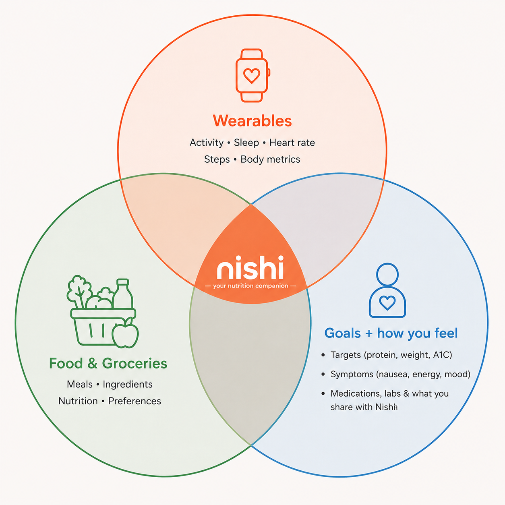

You hit your protein target 4 days running. Highest streak yet.
Plan tomorrow
See the days
Nishi connects what's in your kitchen, what your wearables say, and how you actually feel. It helps you eat well, quietly, every day.
Nishi reads your kitchen, your wearables, and how you feel. It connects them so nothing falls through the cracks.

Nishi knows what's in your kitchen, what you've been eating, and what you want to cook. Track by voice, by photo, or by scanning your grocery receipt.
Connect your watch, your CGM, your sleep tracker. Activity, sleep, heart rate. Nishi reads them and uses them to shape what you eat and when.
Tell Nishi what matters: protein, A1C, weight, energy. And how you feel: nausea, mood, ease. Share medications and labs when you want.
The difference Most AI tools open with a blank prompt.
Nishi opens with something it noticed.
Three moments from a real day, with Nishi closing the loop from observation to action.
You hit your protein target 4 days running. Highest streak yet.
Protein so far: 28g. You usually feel best when you hit 60g by 3pm.
You bought salmon Sunday. Broccoli is already in the fridge. Dinner is mostly here.
Calorie counting and "eat less of everything" were not built for this. Nishi is.
Not on a GLP-1? Nishi works for anyone navigating nutrition with intention — pre-diabetes, metabolic health, longevity, or just trying to eat well in the real world.
Built with care, not claims. Nishi is a wellness companion, not a medical service. We don't diagnose or prescribe. We don't sell your individual data. We work with a clinical advisory board.